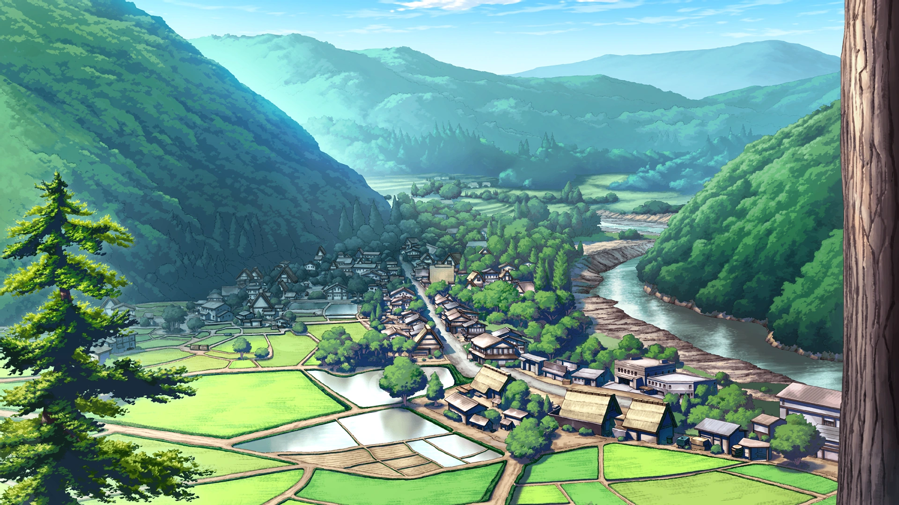

The Cicada Chronicle
June 20, 1983
WATANAGASHI FESTIVAL CONCLUDES; TWO INCIDENTS REPORTED AFTER NIGHT CEREMONY
The annual Watanagashi Festival concluded last evening at the Hinamizawa Furude Shrine, drawing villagers and visiting spectators for the customary rites honoring the local deity, Oyashiro-sama. The highlight of the evening was the traditional kagura performance by shrine maiden Rika Furude, who performed the sacred dance before a hushed crowd beneath lantern light. Clad in ceremonial robes and bearing the ritual hoe, Miss Furude enacted the ancient rite symbolizing purification and the warding off of calamity. The performance concluded to sustained applause. However, in the early hours following the festival, authorities confirmed two serious incidents.
Visiting Photographer Found Dead; Clinic Worker Missing
Mr. Jiro Tomitake, a freelance photographer known for documenting the festival each year, was discovered deceased late last night. Officials have not released full details regarding the cause of death, stating only that an investigation is ongoing.
In addition, Ms. Miyo Takano, affiliated with the Irie Clinic and a frequent attendee of the festival, has been reported missing. She was last seen near the shrine grounds following the ceremony. Search efforts are currently underway.
The pairing of one confirmed death and one disappearance on the night of Watanagashi has renewed quiet speculation among villagers. For several consecutive years, similar incidents have occurred in close proximity to the festival. Many residents refer to this recurring pattern as “Oyashiro-sama’s Curse."
The Beginning of the “Curse”
Local memory dates the origin of this so-called curse to Shōwa 54 (1979), during unrest surrounding the now-canceled Hinamizawa Dam Project. That year, on the night of the Watanagashi Festival, a violent altercation broke out at the dam construction site. According to contemporary reports, a confrontation escalated between the construction manager and several workers. What began as a fight reportedly spiraled out of control, and the manager was beaten to death with tools found on site.
Fearing prosecution, the group allegedly conspired to conceal the crime by dismembering the body into six parts, with each participant tasked with hiding a portion. Despite this effort, one of the men later sought medical treatment for injuries sustained in the struggle and confessed to authorities. The remaining assailants turned themselves in. However, the presumed leader of the group disappeared before he could be apprehended, and one portion of the remains was never recovered.
To the people of Hinamizawa, the events of that night marked the first instance of a death and a disappearance tied to Watanagashi. In the years that followed, each festival was accompanied by another pair of tragedies. Whether coincidence or something more, the pattern became inseparable from the village’s folklore. And so, what began as a criminal case during a period of political tension gradually transformed into legend — the perceived judgment of Oyashiro-sama himself.
Origins of a Troubled Tradition
The Watanagashi Festival, whose name translates roughly to “cotton drifting,” traditionally centers on purification. Cotton offerings are symbolically cast into the river, representing the casting away of sin and misfortune.
Historical accounts, however, suggest that the festival’s distant past was more severe. During periods of famine or unrest, public punishments were reportedly carried out in the deity’s name. Oral histories describe ritualized torture and harsh communal justice intended to expel corruption from the village. These practices were abolished generations ago, but echoes remain in ceremonial symbolism.
Furude's shrine dance preserves these motifs in gentler form. The downward arc of the ritual hoe, once associated with tangible punishment, now signifies spiritual cleansing. The measured circling steps evoke confinement not as retribution, but as containment of misfortune. What was once literal has become allegorical — a transformation from judgment to prayer.
Yet with each passing year that ends in tragedy, the old imagery regains potency in the minds of residents. As lanterns are dismantled and the cotton offerings drift downriver, Hinamizawa awakens to another uneasy morning. Whether the recent incidents prove to be tragic coincidence or something darker, the shadow of history continues to fall across the village’s most sacred night.
Does anyone else feel a weird sense of Deja Vu?

Seriously. If I can just GET THROUGH this June... If I could just... get... through...
delete an x from this if this page doesnt deploy xxxxxxxxxxxxxxxxxxxxxxxxxxxxxxxxxxxxxxxxxxxxxx